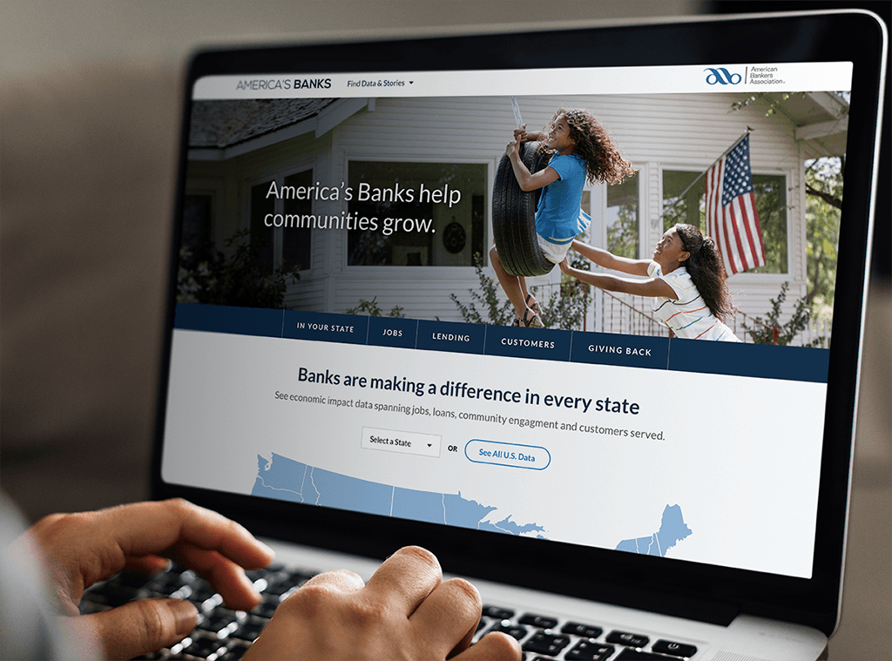

Designing an advocacy campaign website for the American Bankers Association - the largest financial trade group in the United States.

The project: Redesign an aging campaign website created to demonstrate the value that banks bring to local communities and the economy.
The challenge: Hone in on a primary audience, understand what they want to get out of visiting the site, and challenge paradigms established by the original version from years ago.
There were a few things I knew about the orignial site's performance going into the project. Web analytics told a story of poor engagement and high bounce rates. Meanwhile, business owners lamented an onerous content management and solicitation processes.
I wrote a creative brief to baseline a few assumptions with the client. First, I wanted to succinctly articulate the business problem to align multiple stakeholders under a united vision. Next, I made a first pass hypothesis about the suspected target audience and what they were after. This part was key for stakeholder alignment - it would set the stage for the architecture and messaging of the entire redesigned site. I closed the brief by outlining some strategic and tactical redesign opportunities as actionable means of getting the redesign the right.
Next up was user research. Hearing the perspective of business owners made for great assumption baselining, but I needed to hear directly from the people who used the site in the context of the banking industry. I scripted questions focused on motivations for visiting, most sought after information, usability impediments, and physical context. For this user research effort, I made sure to engage a visual designer to explore interview questions pertaining to emotional response. I wanted to make sure we had feedback that would inform the mood, tone, and personality most appropriate for the eventual redesign. For me, this approach got me a great co-facilitator, and for the visual designer, some exposure to a piece of the end-to-end design process that sometimes neglects an early visual design perspective.
Names substituted and responses redacted to protect the confidentiality of participants.
After synthesizing some honest user research notes into common themes, it was clear there needed to be a paradigm shift in navigation and information hierarchy. We learned that the primary audience was most interested in quantitative data about the banking industry – with narrative “feel good” stories a distant second. Knowing how invested business owners were in offering narrative content, I used feedback drawn directly from users to propose a site structure that was faithful to prioritizing financial data - but still leveraging narrative content as augmentation.
With a site map in place and user goals validated, I got to work on interactive wireframes. I used Axure to illustrate the redesign as a clickable prototype to better elicit user and client feedback, and so that I could build mobile responsive wireframes using the same elements across multiple adaptive views, saving the project time and myself redundant work.
My main informational campaign site for primary audience:
My multi-step submission form for content solicitations:
The final product after the visual designer made the pass at styling, skillfully implementing a distinct look and feel for this campaign, while still being faithful to the overarching association brand:
From Wall Street to Washington, Dan's interaction design and UX lead work spans a range of industries and personas, creating experiences through digital products, websites, and mobile apps.
{kind=link}
{kind=link}